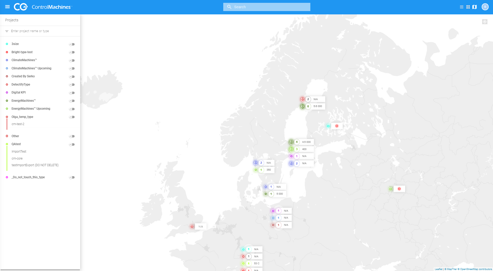
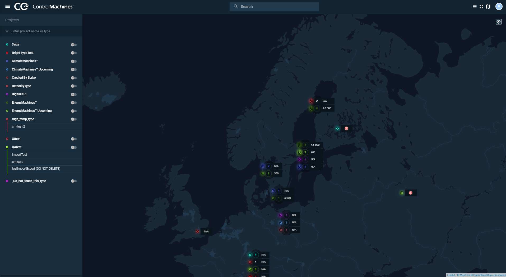

Portal interface overview#
This article contains general information about Portal's interface

Also, Portal has a dark mode.

Portal interface consists of several parts:
- Left menu or list of elements
- Section content area or the main area
- Navigation panel
- Header
The first two parts form a section view. The navigation panel is a pop-up, using this menu, you can navigate through the sections. The header contains common elements and special buttons.
- Portal interface header
The header's elements and buttons - Portal navigation panel
Overview of the Portal navigation panel - User profile
In this article, you can find brief information about settings of your profile.
Parent topic: ControlMachines™ HMI Portal